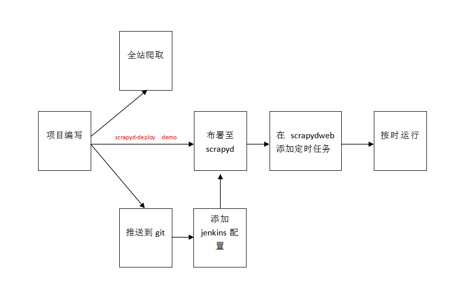

Scrapy项目编写及布署流程规范
一、编写规范
1.项目名
名字使用驼峰（CameCase）命名风格，首字母大写。
框架名网站名_V[数字编号]行业编号
Scrapy_ChinaNet_V1_01
当网站名过长，可使用网站名首字母起名
如Scrapy_ChinaLianTongTiDong_V1_01 --》 Scrapy_CLTTD_V1_01
注意：所有项目的名称不能重复
2.爬虫名
名字使用驼峰（CameCase）命名风格，首字母小写。
网站名_v[数字编号]
chinaNet_v1
3.类名
#类名使用驼峰（CameCase）命名风格，首字母大写，私有类可以用一个下划线开头。
class Farm():
pass
class AnimalFarm(Farm):
pass
class _PrivateFarm(Farm):
pass
4.函数名
#函数名一律小写，多个单词，用下划线隔开
def run():
pass
def run_with_env():
Pass
#私有函数在函数前加一个下划线_
class Person():
def _private_func():
pass
5.变量名
变量名用小写，多个单词，用下划线_隔开
if __name__ == '__main__':
count = 0
school_name = ''
6.常量名
采用全大写，多个单词，使用下划线隔开
MAX_CLIENT = 100
MAX_CONNECTION = 1000
CONNECTION_TIMEOUT = 600
7.注释
对类添加说明和重要的函数或代码段添加注释
单行注释用#
多行注释用三引号''' '''
8. Scrapy项目文件要求
Scrapy_ProjectName_V1_01
└─Scrapy_ProjectName_V1_01
│ ├─spiders
│ │ └─spider.py
│ └─items.py
│ └─middlewares.py
│ └─pipelines.py
│ └─settings.py
└─scrapy.cfg
8.1 spider.py 爬虫文件
- 代码规范、整洁
- 在必要地方加上注释
- 部署前必须要加上去重功能
注意：不要在此做数据入库操作，要推送到pipelines
8.2 Settings.py爬虫配置文件
必须使用
- 下载延迟：DOWNLOAD_DELAY = 3 （3秒以上）
- 下载中间件：DOWNLOADER_MIDDLEWARES
- 数据管道：ITEM_PIPELINES
- 日志等级：LOG_LEVEL = 'INFO'
- Apollo配置信息 其他功能视情况自由使用
8.3 pipelines.py：
- spider爬取的数据一定要推送到pipelines中，这样可以通过爬虫日志观察到数据统计情况
主要方法：
open_spider(self,spider):在此方法中定义参数变量，数据库初始化process_item(self,item,spider):在此方法中进行数据的清洗、去重、入库，在入库前要判断字段是否空缺，类型是否正确，合格才入库close_spider(self,spider):在此方法中关闭数据库连接，避免数据库占用内存- 执行顺序：open_spider --> process_item --> close_spider
注意：涉及数据库的信息如地址、密码、端口，以及一切调用接口链接如获取代理链接、selenium_webdriver接口链接等都需要使用apollo，在apollo中获取。
8.4 middlewares.py
在此编写下载中间件功能
- 添加代理、更换代理
- 添加用户代理
- 添加超时处理
- 处理请求异常
- Selenium，webdriver
主要方法及执行顺序：process_request --> process_response --> process_exception 注意：涉及数据库的信息如 地址、密码、端口，以及一切调用接口链接如获取代理链接、selenium_webdriver接口链接等都需要使用apollo，在apollo中获取。
8.5 items.py
添加爬取数据字段
8.6 scrapy.cfg
添加布署地址信息
[scrapyd:demo] url = http://xxxxxx:xxxx project = 项目名
8.7 其他
除了以上说明的文件，还可以自行添加文件加以辅助
9. scrapy项目的一生

二、 布署
1. scrapyd：
环境安装配置
2. scrapydweb：
定时要求：
- 定时的爬取时间不能集中在某个时间段；
- 资讯类爬虫爬取频率是每天爬取一次或者每周爬取几次，视情况而定；
- 数据类、报告类爬虫频率根据数据类型及网站类型而定，一般为1个月一次，或两三个月一次，日更的网站可以每日爬取一次；
3. Git推送：
创建一个gitlab的仓库项目，复制http的git地址 git clone [url.git] 下载到本地 进入到刚下载的git 文件夹， 把你要上传的文件，复制到此文件夹，修改README.md文件 git add . ----> git commit -m"your commit message"----> git push
- Jenkins布署： 查看jenkins说明：地址
三、其他
1. 常用工具
1.1. 代理池
http://192.168.3.85:5010/get/ 获取代理 http://192.168.3.85:5010/get_status/ 查看代理数量
1.2. Apollo（阿波罗）
详情请看Apollo说明
1.3. Selenium
http://192.168.3.85:4444/wd/hub/
1.4. scrapyd-scrapydweb:
http://192.168.3.85:5000/1/servers/
2. 数据、报告菜单id生成说明
如 农业 id 为01
| 目录 | 名称 | id |
|---|---|---|
| 第一级目录 | 农业 | 01 |
| 第二级目录 | xxx | 01001 |
| 第三级目录 | xxx | 01001001 |
| ...... | ...... | ...... |
| 最后一级目录 | xxx | 01001…001 |
- Mysql菜单表字段必须有这3个字段
menu_id string menu_name string parent_menu_id string 其他字段按个人情况添加